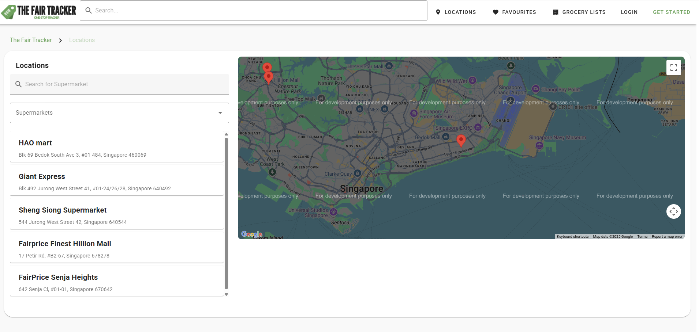
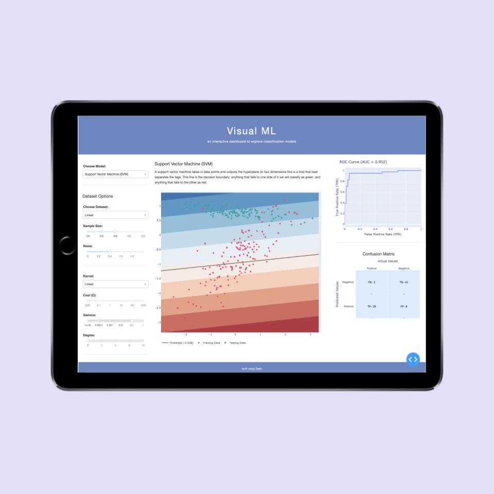
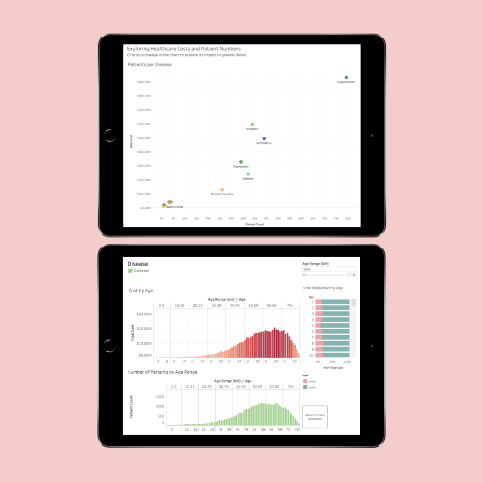

Resume
Education
National University of Singapore
School of Computing
BSc. in Business Analytics (Financial Analytics Specialisation in-progress)
Relevant Coursework
Aug 23 - Present
Singapore
Korea University
International Winter Campus
Participated in Korea University's Winter Campus academic and cultural immersion programme. Gained a strong foundation in core accounting principles and applied them to real-world business scenarios, demonstrating the ability to classify transactions and determine appropriate accounting treatments.
Relevant Coursework
Dec 24 - Jan 25
South Korea

Temasek Polytechnic
School of Business
Accountancy and Finance (Finance specialisation)
Relevant Coursework
Apr 18 - Apr 21
Singapore
Work Experience
Compagnie Financière Tradition Singapore (Returning in Jul 2026)
Quantitative Developer Intern
Quantitative Analytics (Financial Derivatives and Products)
Dec 23,
May 24,
May 25 - Present
Singapore
Skezi
Data Science Intern
Jul 25 - Dec 25
France, Paris
Portfolio

TheFairTracker I contributed to the development of TheFairTracker, a centralized academic planning system built with Vue.js and Firebase. My key contributions include implementing the Academic Planner feature (drag-and-drop modules, add/delete, and prerequisite checks), building the Module Popularity Dashboard, and designing and coding the entire user interface of the web application.

Muhammadiyah Welfare Home was a website development project for a Non-Profit Organization "Muhammadiyah Welfare Home", leveraging Vue.js and Firebase for real-time data and user authentication.
Links: Github

This BT4221 ML project explores loan default prediction using LendingClub’s dataset (2007–2020) through machine learning. The team performed extensive data cleaning, feature engineering, dimensionality reduction via PCA, and addressed class imbalance using SMOTE and hybrid sampling methods. Six models were evaluated, with Random Forest selected as the best performer (recall: 0.8261, PR_AUC: 0.1890). Important predictors identified include hardship_reason, grade, and home_ownership. Despite computational constraints, the team optimised resources effectively and derived practical insights to support LendingClub in enhancing risk management and implementing tiered pricing strategies.
Links: Code | Final Report